- Supervisión médica especializada: Consultas regulares con médicos geriatras para el manejo de enfermedades crónicas y el control de medicamentos.
- Enfermería 24 horas: Monitoreo constante de signos vitales, administración de medicación y curaciones.
- Rehabilitación y Terapias: Servicios de kinesiología, fisioterapia y terapia ocupacional para mantener la movilidad y funcionalidad física.
- Apoyo Psicológico y Cognitivo: Estimulación de la memoria, atención psiquiátrica y acompañamiento emocional para el residente y su familia.
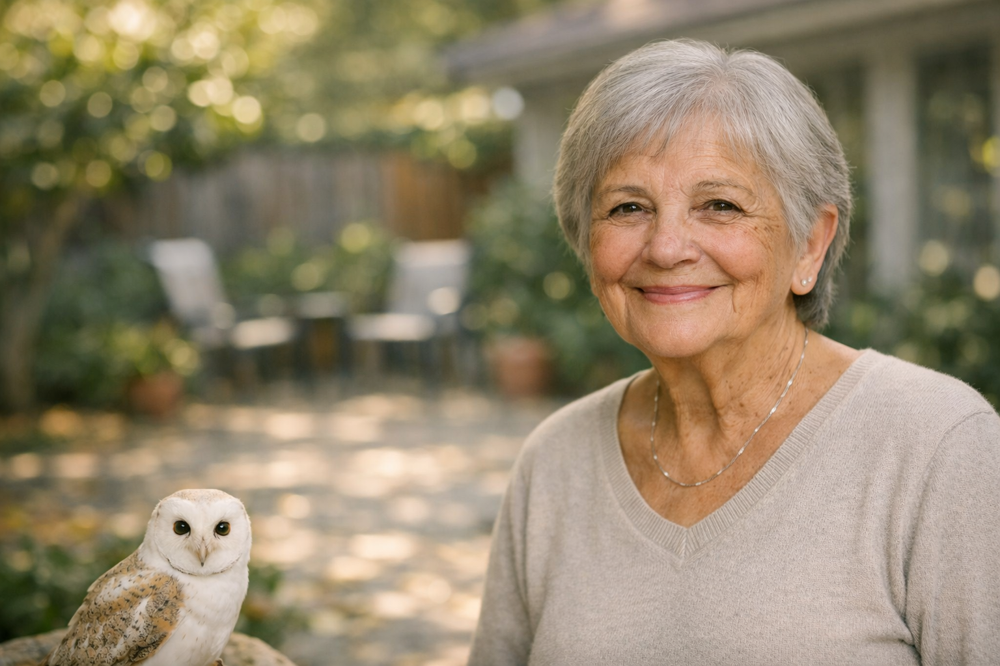
Un hogar donde la sabiduría se encuentra con el cuidado profesional
Atención Médica 24hs
Equipo de profesionales de la salud capacitados para brindar seguimiento continuo y personalizado.
Ambiente Familiar
Instalaciones diseñadas para transmitir paz, comodidad y el calor de un verdadero hogar.
Nutrición Balanceada
Menús elaborados por nutricionistas, adaptados a las necesidades específicas de cada residente.
Cuidado Integral y Personalizado
Nuestros servicios están diseñados para garantizar el bienestar físico, mental y emocional.
- Actividades de la vida diaria (AVD): Ayuda en la higiene personal, vestimenta, alimentación y traslados para personas dependientes. Cuenta también peluquería, pedicuría y podología.
- Alimentación supervisada: Dietas personalizadas elaboradas por nutricionistas, adaptadas a las necesidades médicas de cada residente (diabetes, hipertensión, etc.).
- Alojamiento: Habitaciones individuales o compartidas equipadas con sistemas de seguridad y timbres de emergencia.
- Lavandería y limpieza: Servicio integral de aseo de las instalaciones y mantenimiento de la ropa personal.
- Seguridad: Instalaciones adaptadas con rampas, barras de sujeción y vigilancia constante para prevenir caídas y accidentes. Contamos con camaras de seguridad que funcionan 24 horas
- Actividades lúdicas y talleres: Clases de arte, música, juegos de mesa (bingo, dominó), gimnasia suave y talleres de cocina.
- Eventos sociales: Celebraciones de cumpleaños y festividades que fomentan la integración y el sentido de comunidad.


"En cada nueva estación, nos espera una nueva emoción"
Pascuas en Familia
Celebramos la esperanza y la renovación. Nuestros residentes comparten momentos de fe, decoran roscas tradicionales y disfrutan de un almuerzo especial que trae el calor del domingo en familia directamente a nuestras mesas.

25 de Mayo: Sentimiento Patrio
El orgullo nacional se vive a flor de piel. Entre escarapelas, locro y pastelitos, recordamos nuestras raíces acompañados de música folclórica, creando un ambiente donde la historia y la memoria son las protagonistas.
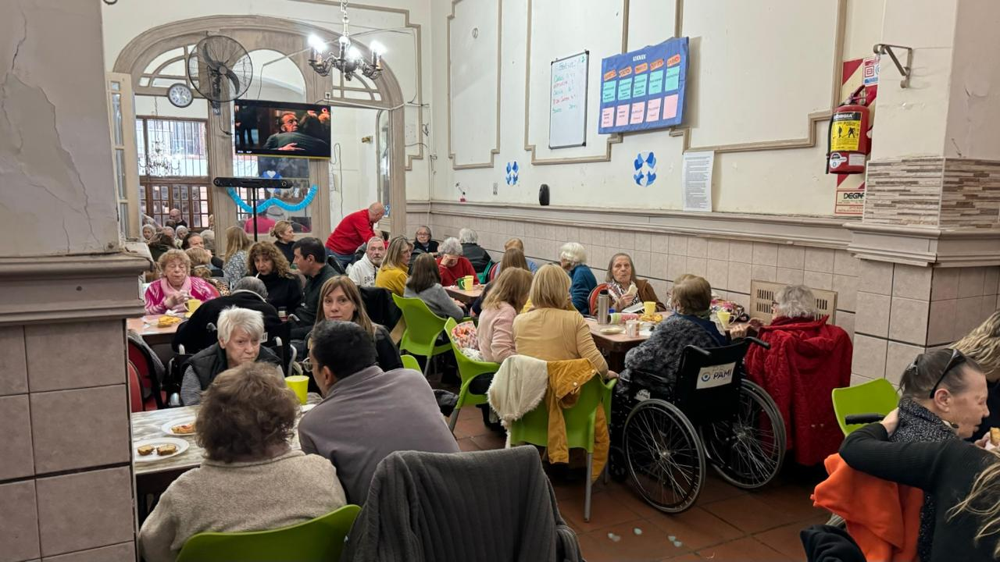
Octubre de Creatividad y Halloween
¡El geriátrico se transforma! Durante todo el mes, nuestros residentes son los directores de arte: aportan ideas, recortan, pintan y decoran cada rincón. La imaginación no tiene edad y las risas llenan los pasillos.
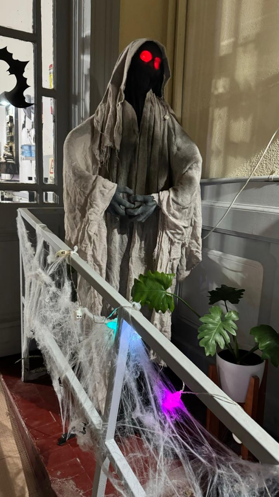
10 de Noviembre: Día de la Tradición
Un homenaje a nuestras costumbres gauchas. Compartimos mates, anécdotas del campo, recitado de versos y la música que llevamos en la sangre, manteniendo viva la llama de nuestra identidad argentina.
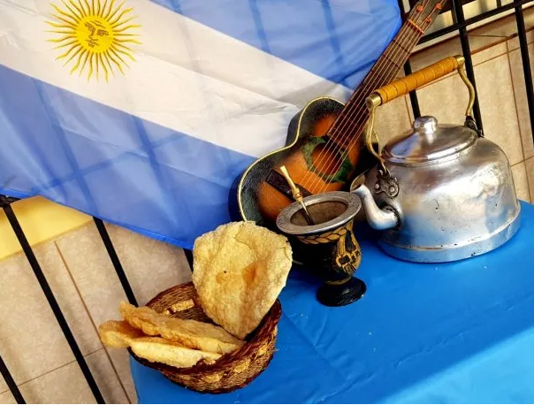
Diciembre Mágico: Preparando la Navidad
El mes más emotivo del año. Las manos que trabajaron toda una vida ahora se unen para armar el arbolito y crear adornos. Es un momento de pura colaboración, paz y espera compartida, donde el espíritu navideño nos abraza a todos.

Nuestro Aniversario
Un año más brindando amor, cuidado profesional y un hogar seguro. Celebramos nuestra historia junto a las familias que confían en nosotros día a día. ¡Gracias por ser parte de Geriátrico De Los Santos!
Sobre Nosotros
Somos un equipo dedicado a brindar el mejor cuidado y atención a nuestros residentes, creando un ambiente acogedor y lleno de amor. Nuestra misión es mejorar la calidad de vida de las personas mayores, respetando su dignidad y promoviendo su bienestar físico y emocional.
El Camino hacia un Nuevo Hogar
Un proceso transparente y humano para asegurar la mejor bienvenida.
-
1
Contacto Inicial
Una charla cercana por WhatsApp y una visita guiada para conocer nuestros espacios.
-
2
Pre-Admisión
Encuentro previo para conocer la historia, gustos y necesidades del futuro residente.
-
3
Bienvenida
Entrevista formal con el residente y su familiar para construir el plan de cuidado personalizado.
-
4
Valoración Médica
Solicitamos epicrisis y estudios recientes para garantizar un cuidado de excelencia y a medida.
Conozca su próximo hogar
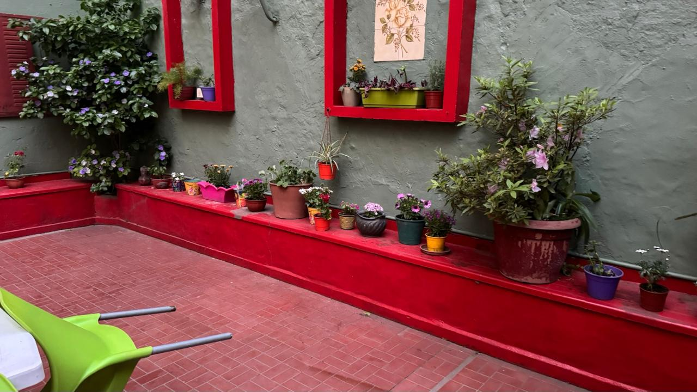
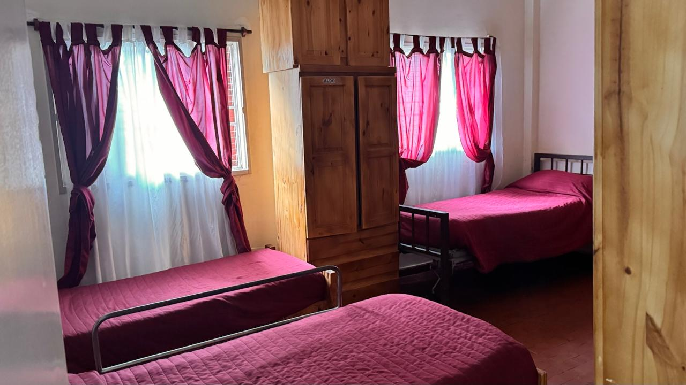

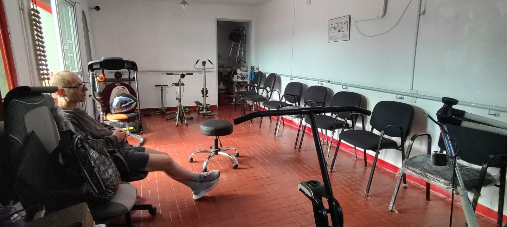
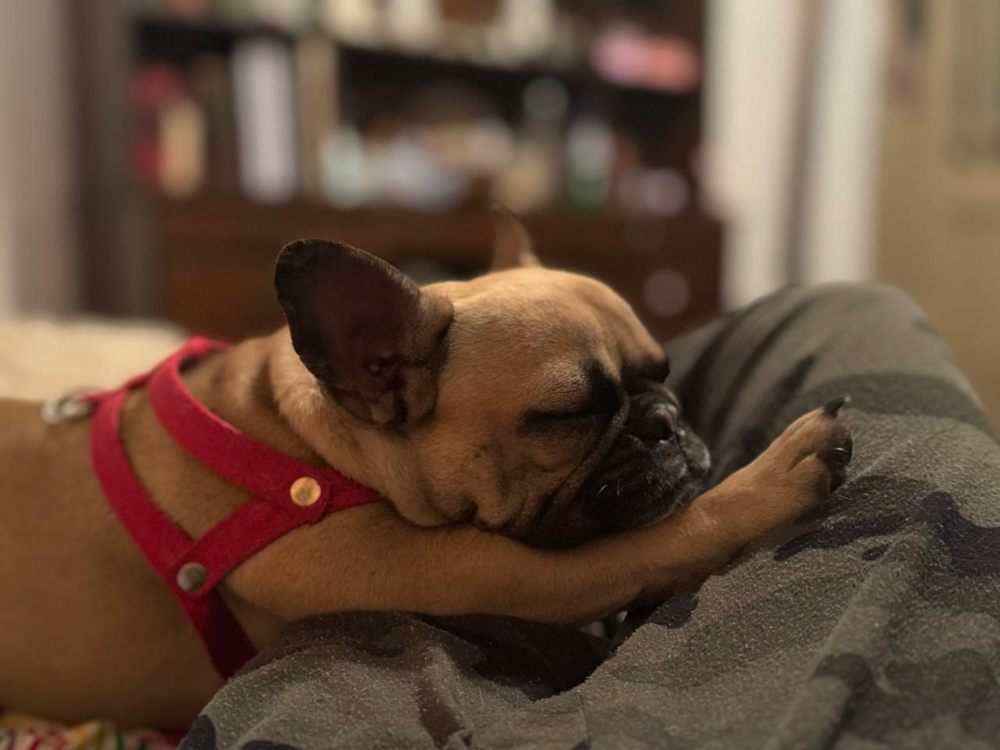
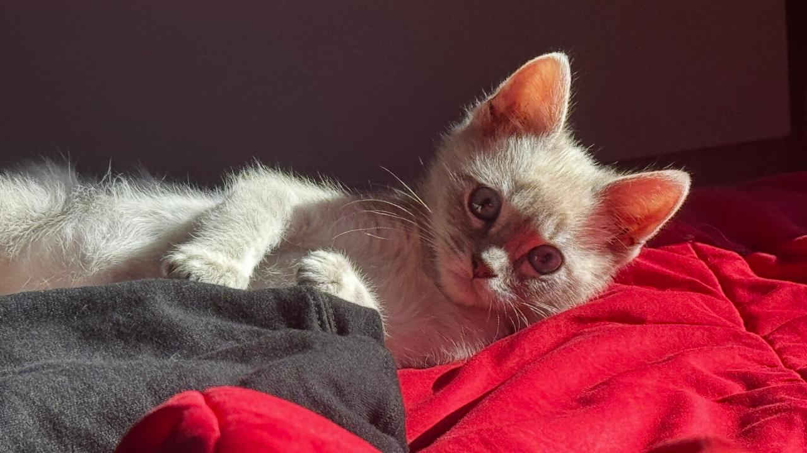
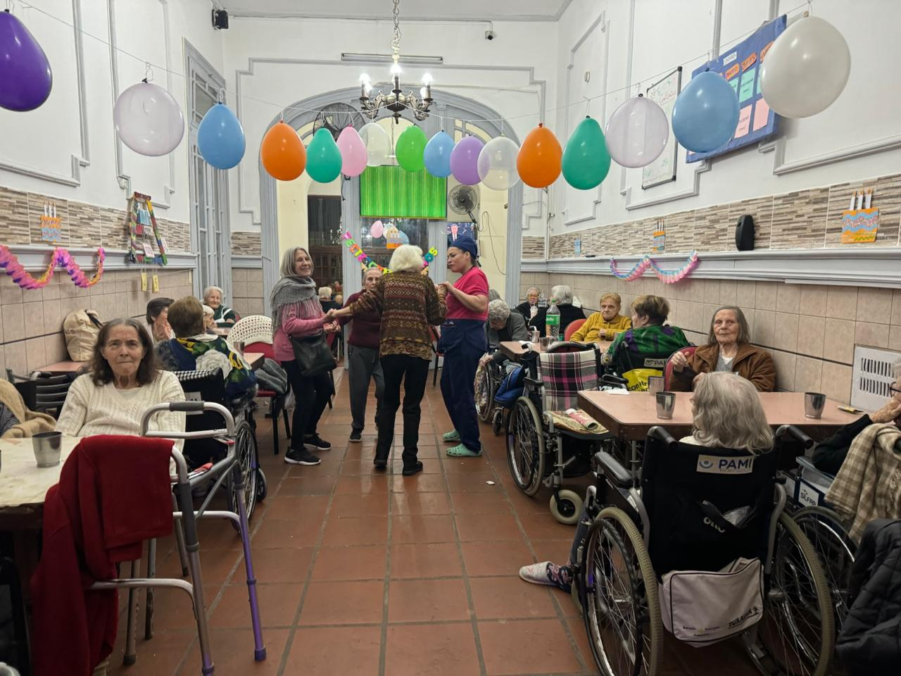
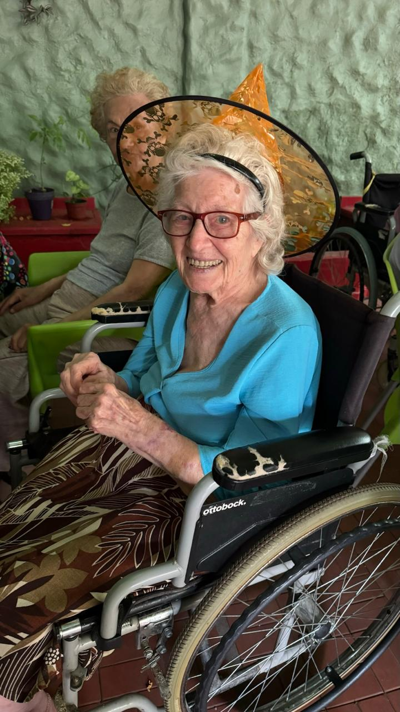
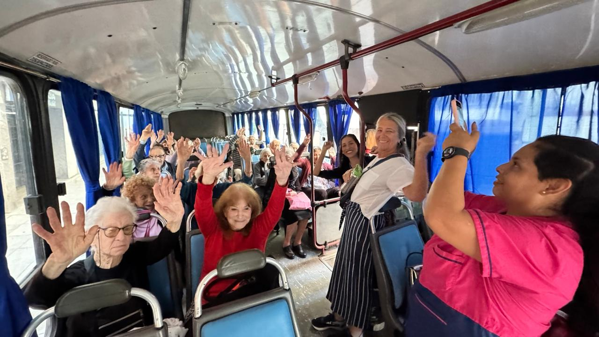
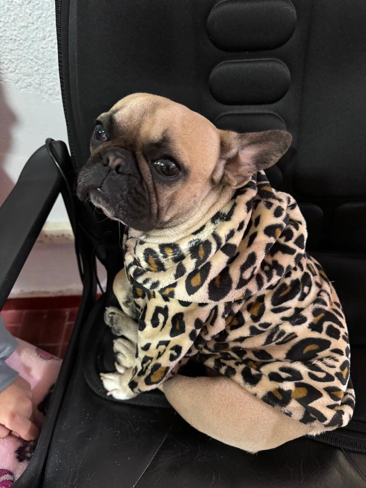
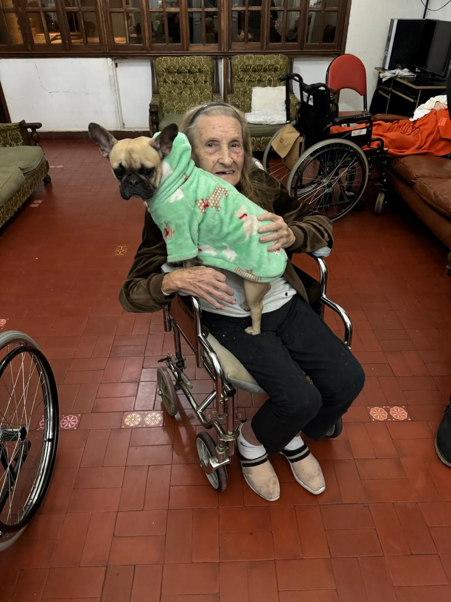
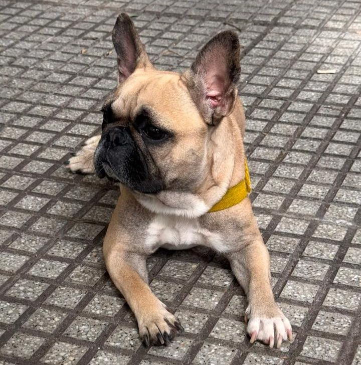